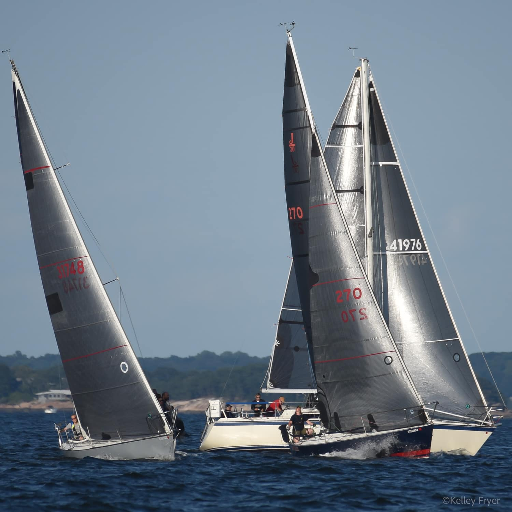
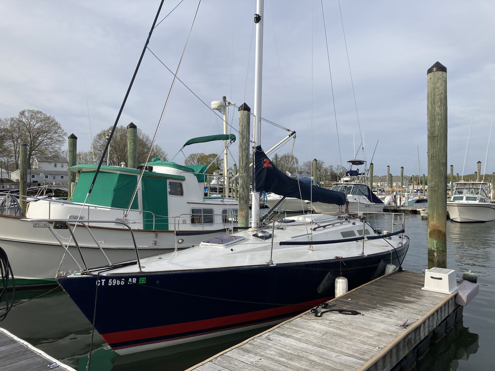

<!DOCTYPE html>
<html lang="en">
<head>
    <meta charset="UTF-8">
    <meta name="viewport" content="width=device-width, initial-scale=1.0">
    <title>My Simple Website</title>
    <style>
        body {
            font-family: Arial, sans-serif;
            margin: 20px;
            text-align: center;
        }
        h1 {
            color: #333;
        }
        p {
            font-size: 18px;
            color: #666;
        }
        .gallery {
            display: grid;
            grid-template-columns: repeat(auto-fit, minmax(150px, 1fr));
            gap: 10px;
            max-width: 800px;
            margin: 20px auto;
        }
        .gallery a {
            display: block;
        }
        .gallery img {
            width: 100%;
            height: auto;
            border-radius: 5px;
            box-shadow: 2px 2px 5px rgba(0, 0, 0, 0.1);
            transition: transform 0.2s ease-in-out;
        }
        .gallery img:hover {
            transform: scale(1.05);
        }
    </style>
</head>
<body>

    <h1>J30 Bayou Bleu for sale</h1>
    <p>Click on any image to view the full-size version.</p>

    <p><span style="color: rgb(102, 102, 102)">1982 J30 “Bayou Bleu”</span>
</p>
<p>Flag blue hull</p>
<p>Yanmar 2QM15 Diesel Engine</p>
<p><strong>Sails</strong>
</p>
<p>Neil Pryde Main, PXB, full battens 2018</p>
<p>Neil Pryde #1 PXB lightskin 2024</p>
<p>Neil Pryde #3 Vectrix membrane in technora and with grey</p>
<p>Liteskins. 2021</p>
<p>Neil Pryde Spinnaker 2018</p>
<p>Full set of older sails (main, #1, #3, spinnaker)</p>
<p>New Harken Primary winches 2017</p>
<p>All nav lights and interior lights converted to LED</p>
<p>Portlights replaced with LED 2024</p>
<p>All new Garmin instruments 2018, including:</p>
<p>Garmin wired sailpack 43 (wind, depth, compass, speed)</p>
<p>3 Garmin displays (GNX Wind and (2) GNX 20)</p>
<p>Garmin echoMAP chartplotter mounted on arm</p>
<p>Brand new Garmin wind instrument</p>
<p>VHF radio</p>
<p>Simrad Tillerpilot TP10 2020</p>
<p>Aluminum spinnaker pole</p>
<p>Lifelines and stanchions replaced 2012</p>
<p>New Harken carbo racing foil 2024</p>
<p>All shrouds and stays replaced 2014</p>
<p>Martek 2 blade folding prop; reconditioned and balanced 2020</p>
<p>120V shore power with installed battery charger</p>
<p>2 burner alcohol stove</p>
<p>Manual fresh water system with tank</p>
<p>Enclosed head with holding tank and pumpout</p>
<p>Icebox</p>
<p>2 quarter berths</p>
<p>2 salon berths</p>
<p>V berth</p>
<p>Danforth anchor with chain and line rode</p>
<p>2 deep cycle batteries</p>
<p>Bottom sanded and painted every spring with one coat of Vivid</p>
<p>Bayou Bleu is ready to race and/or cruise.</p>
[200~<p><span style="color: rgb(102, 102, 102)">1982 J30 “Bayou Bleu”</span>
</p>
<p>Flag blue hull</p>
<p>Yanmar 2QM15 Diesel Engine</p>
<p><strong>Sails</strong>
</p>
<p>Neil Pryde Main, PXB, full battens 2018</p>
<p>Neil Pryde #1 PXB lightskin 2024</p>
<p>Neil Pryde #3 Vectrix membrane in technora and with grey</p>
<p>Liteskins. 2021</p>
<p>Neil Pryde Spinnaker 2018</p>
<p>Full set of older sails (main, #1, #3, spinnaker)</p>
<p>New Harken Primary winches 2017</p>
<p>All nav lights and interior lights converted to LED</p>
<p>Portlights replaced with LED 2024</p>
<p>All new Garmin instruments 2018, including:</p>
<p>Garmin wired sailpack 43 (wind, depth, compass, speed)</p>
<p>3 Garmin displays (GNX Wind and (2) GNX 20)</p>
<p>Garmin echoMAP chartplotter mounted on arm</p>
<p>Brand new Garmin wind instrument</p>
<p>VHF radio</p>
<p>Simrad Tillerpilot TP10 2020</p>
<p>Aluminum spinnaker pole</p>
<p>Lifelines and stanchions replaced 2012</p>
<p>New Harken carbo racing foil 2024</p>
<p>All shrouds and stays replaced 2014</p>
<p>Martek 2 blade folding prop; reconditioned and balanced 2020</p>
<p>120V shore power with installed battery charger</p>
<p>2 burner alcohol stove</p>
<p>Manual fresh water system with tank</p>
<p>Enclosed head with holding tank and pumpout</p>
<p>Icebox</p>
<p>2 quarter berths</p>
<p>2 salon berths</p>
<p>V berth</p>
<p>Danforth anchor with chain and line rode</p>
<p>2 deep cycle batteries</p>
<p>Bottom sanded and painted every spring with one coat of Vivid</p>
<p>Bayou Bleu is ready to race and/or cruise.</p>
<p>
    <br>
    <br>
</p>
    
    <div class="gallery">
        <a href="images/BB_start_2.jpg" target="_blank"></a>
        <a href="images/BB spinnaker finish.jpg" target="_blank"></a>
        <a href="images/BB_at_dock.jpg" target="_blank"></a>
        <a href="images/image4.jpg" target="_blank"></a>
        <a href="images/image5.jpg" target="_blank"></a>
        <a href="images/image6.jpg" target="_blank"></a>
        <a href="images/image7.jpg" target="_blank"></a>
        <a href="images/image8.jpg" target="_blank"></a>
        <a href="images/image9.jpg" target="_blank"></a>
        <a href="images/image10.jpg" target="_blank"></a>
    </div>

</body>
</html>
